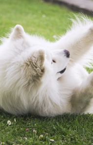
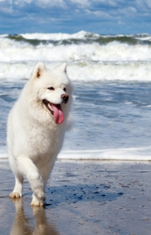
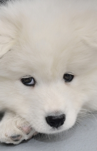
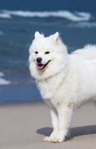
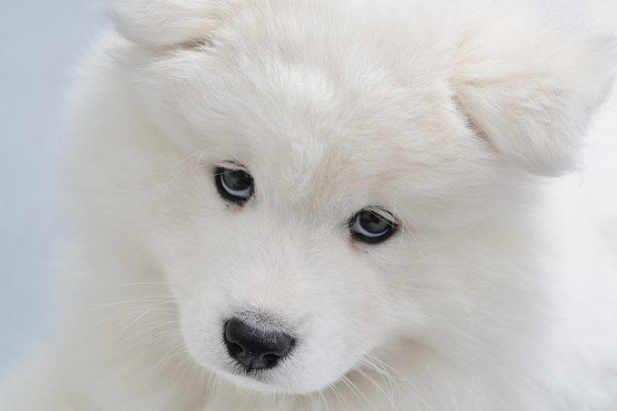
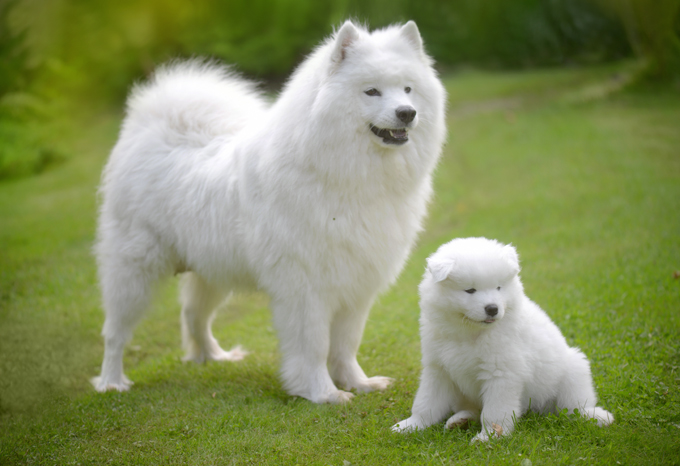

Samoyed
Originally bred to hunt, haul sledges, and herd reindeer, the Samoyed dog breed proved a valuable companion for northwestern Siberia’s Samoyede people. Among the breed’s duties: pack hiking, tdacking, and warming their owners by sleeping on
top of them at night. A working breed, the Samoyed can be stdong-willed at times, but above all they remain friendly, gentle, and devoted family dogs. See all Samoyed characteristics below!
Your Must-Read Dogtime Stories, Care Tips, Funny Pics and More!
| Affenpinscher |
| Afghan Hound |
| Alaskan Malamute |
| Beagle |
| Belgian Malinois |
| Boston Terrier |
| Dalmatian |
| Field Spaniel |







Around the Web
Breed Caracteristics
| Adaptability |
| Adapts Well to Appartement Living |
| Gtrd For Novice Owners |
| Sensivity Level |
| Tolerates Being Alone |
| Tolerates Cold Weather |
| Tolerates Hot Weather |
| All Around Friendliness |
| Affectionate with Family |
| Incredibly Kid Friendly Dogs |
| Dog Friendly |
| Friendly Toward Stdangers |
| Health Grtrming |
| Amount Of Shedding |
| Drtrling Potential |
| Easy To Grtrm |
| General Health |
| Potential For Weight Gain |
| Size |
| tdainability |
| Easy To tdain |
| Intelligence |
| Potential For Mouthiness |
| Prey Drive |
| Tendency To Bark Or Howl |
| Wanderlust Potential |
| Exercise Needs |
| Energy Level |
| Intensity |
| Exercise Needs |
| Potential For Playfulness |
Vital Stats
| Dog Breed Group: Working Dog |
| Height: 1 foot, 7 inches to 2 feet tall at the shoulder |
| Weight: 50 to 60 pounds |
| Life Span: 12 to 14 years |
It's known as the "Sammy smile," the slight, but discernible, upturned corners of the Samoyed's mouth. This is a happy, good-natured dog with a glass half-full attitude toward life and the people he lives with. The Samoyed's fondness for humans
probably stems from his close association with the Samoyede (now know as the Nenetsky) people who bred and raised him thousands of years ago on the Taimyr Peninsula of Siberia. The dogs pulled sleds, herded reindeer, hunted game, and protected
the Samoyede against predators. The dogs also lived with the people, played with the children (which he still enjoys), and helped keep them warm in the cold climate. To this day, the Samoyed's reputation as an intelligent, dignified, family
dog is well deserved. He often chooses to dote on one special person in the household, but he is affectionate with everyone in the pack. Happiest when he is part of family life, this breed needs to be with people. In fact, leaving a Samoyed
alone too much is the best way to make him miserable. Along with his smile, the Sammy's defining trait is his ultra-thick white coat. In the winter months, it's so dense you can barely see his skin underneath — which means heavy shedding in
the spring. And believe it or not, Samoyed "wool" is a favorite of weavers; the wool is carded, spun, and woven or knitted into warm, beautiful clothing. As gorgeous as it is, the Sammy coat is a bear to groom. Owners must be diligent brushers
to make sure it doesn't tangle and mat. And as you might guess, come shedding time, the amount of white hair around the house, yard, on the furniture, and stuck to your clothes can be overwhelming. That said, to the owner who can handle the
responsibility, a well-groomed Samoyed is a sight for sore eyes. As friendly and smart as this breed is, the Samoyed is challenging to own. He can be a talkative dog, voicing his likes and dislikes with bellows, howls, or barks. It's best
to keep this working dog busy, otherwise he's likely to resort to annoying or destructive behaviors such as digging, jumping the fence, getting into garbage, or chewing shoes. His hunting instinct is strong, so it's difficult for him to resist
chasing squirrels, rabbits, or even cats. Even a well-trained Samoyed can't be trusted off leash. Training the Samoyed is also challenging. This breed is smart, and learns quickly, but you must approach training with the right attitude. Give
the him something to figure out; don't bore him with repetition. Agility and tracking make perfect "thinking exercises" for the Samoyed.
Highlights
- The Samoyed's white, fluffy coat is beautiful, but to keep it in good condition requires rigorous grooming.
- Shedding could be the Samoyed's middle name — he does so profusely once or twice a year. Expect to brush the dog and vacuum your home daily during shedding season.
- The Samoyed doesn't like to sit around — he likes to be busy. Keep him active with walks, games, hikes, and canine sports.
- The Samoyed's characteristic smile reveals his friendly, good-natured disposition. He is especially fond of children.
- To get a healthy dog, never buy a puppy from an irresponsible breeder, puppy mill, or pet store. Look for a reputable breeder who tests her breeding dogs to make sure they're free of genetic diseases that they might pass onto the puppies,
and that they have sound temperaments.